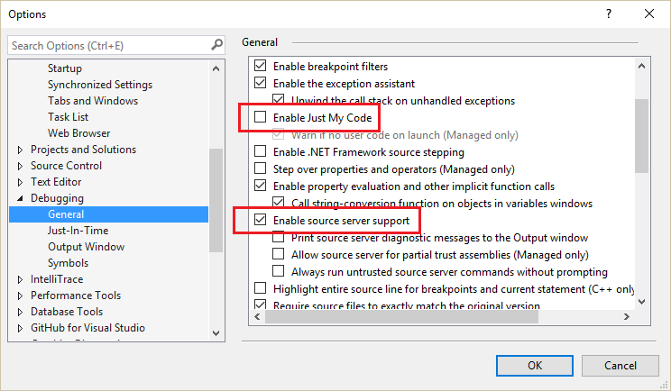

All official ASP.NET Boilerplate nuget packages are GitLink enabled. That means you can easily debug Abp.* nuget packages within your project.
To enable it, "Enable source server support" should be enabled and "Enable Just My Code" should be disabled as shown below:

Once you enable it, you can step into (F11) ASP.NET Boilerplate source code.
Abp.* nuget packages are also published to symbolsource.org, but the GitLink way is far more efficient and easier. See GitLink's page for more information on GitLink.